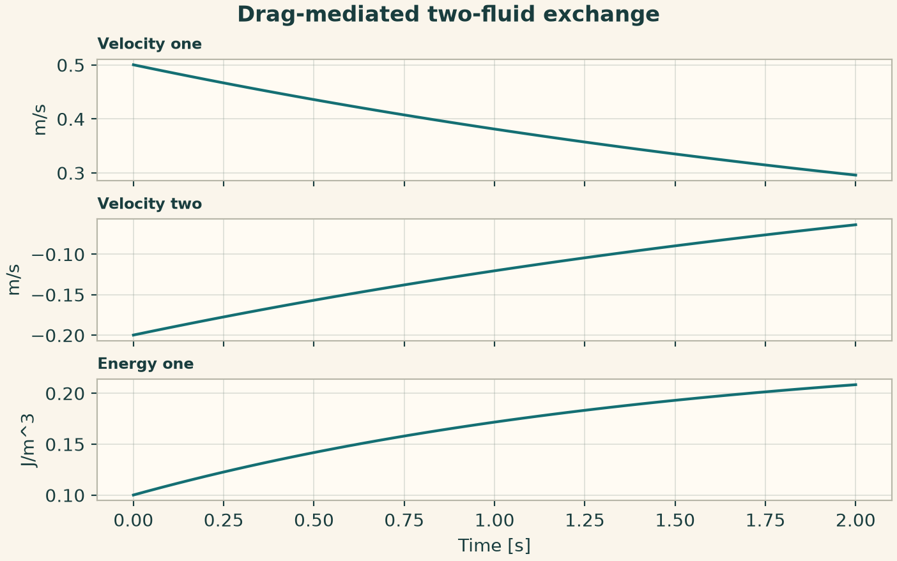
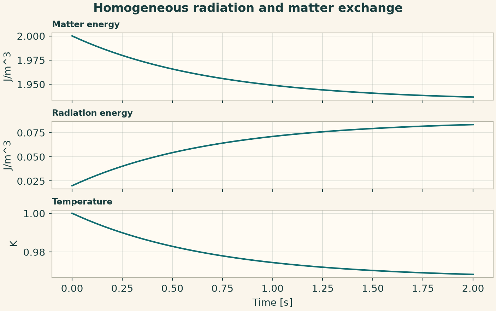
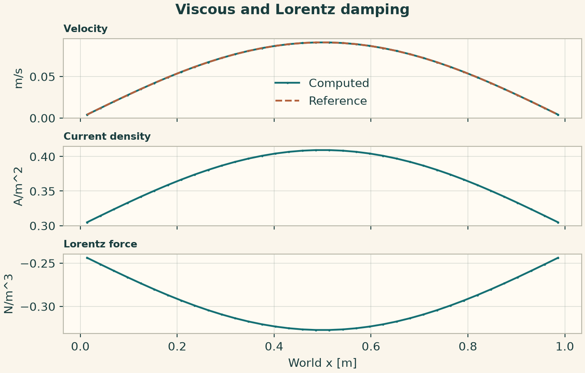
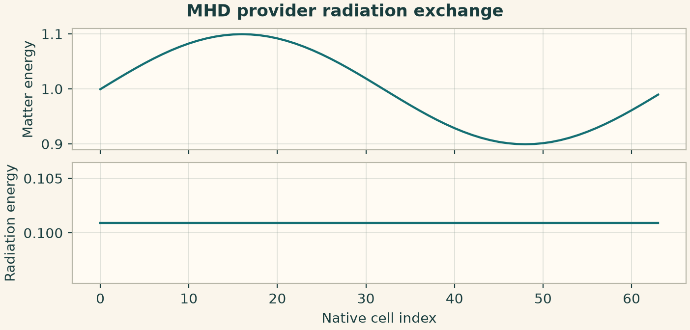
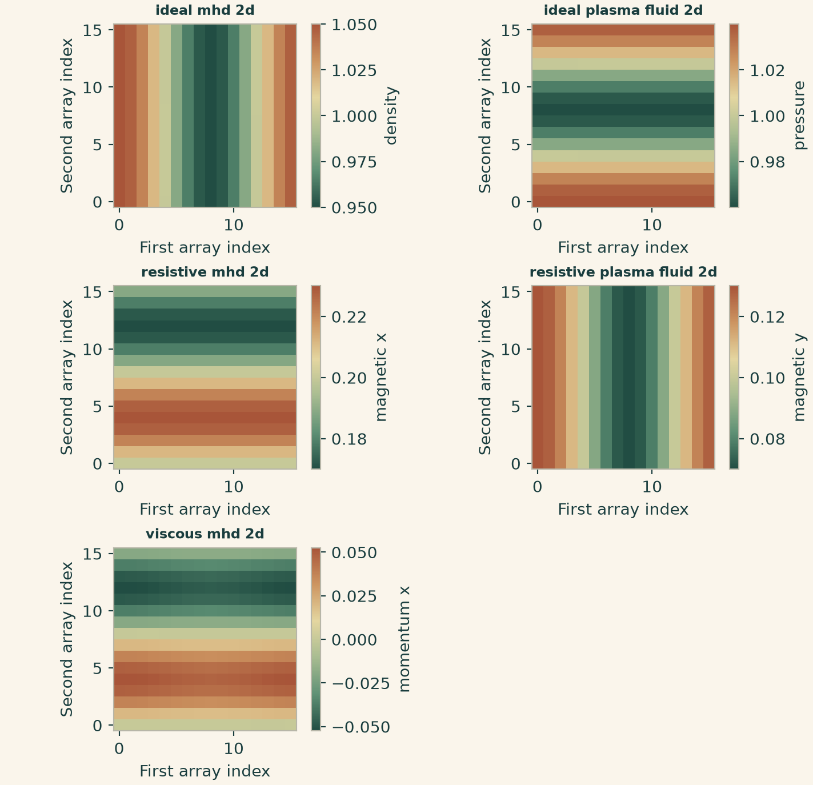
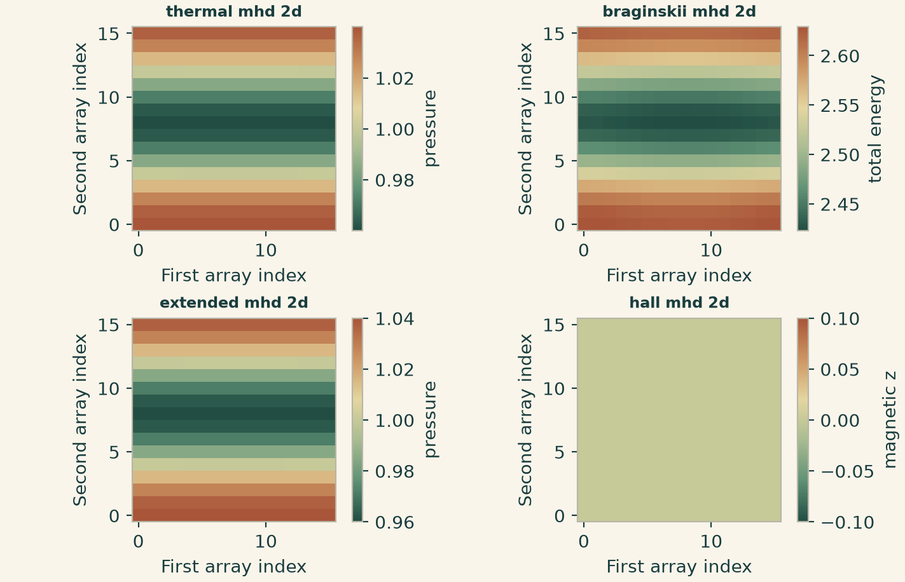
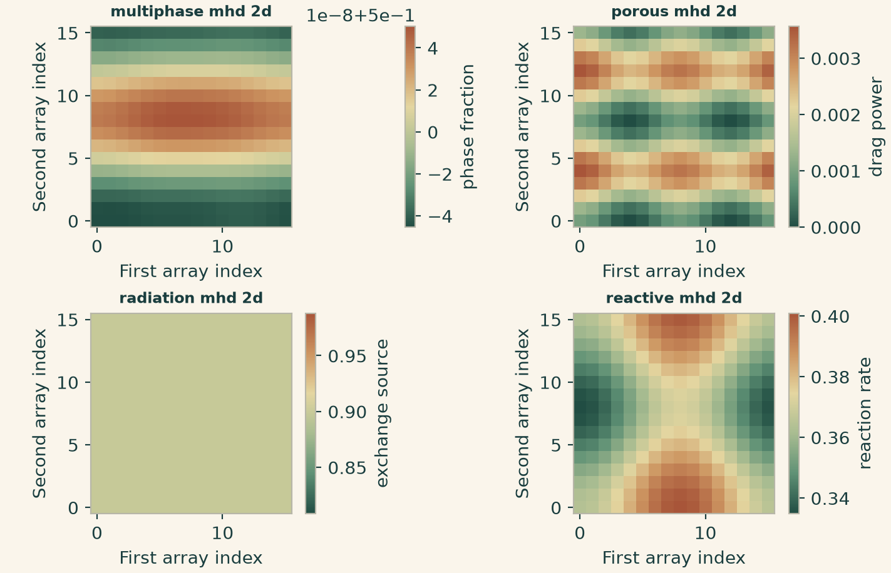
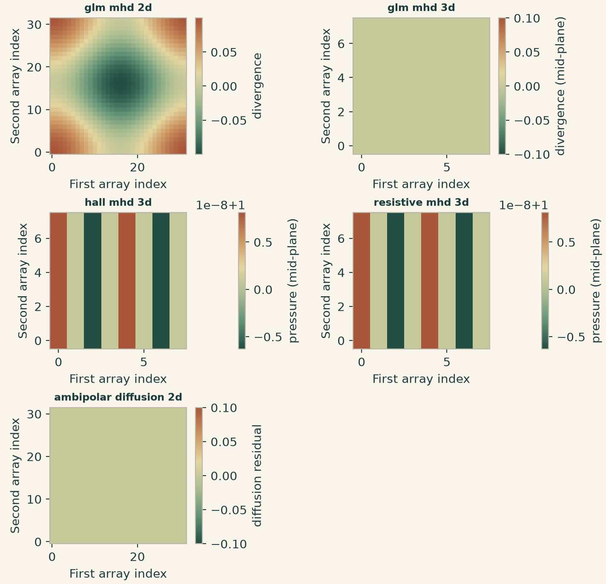
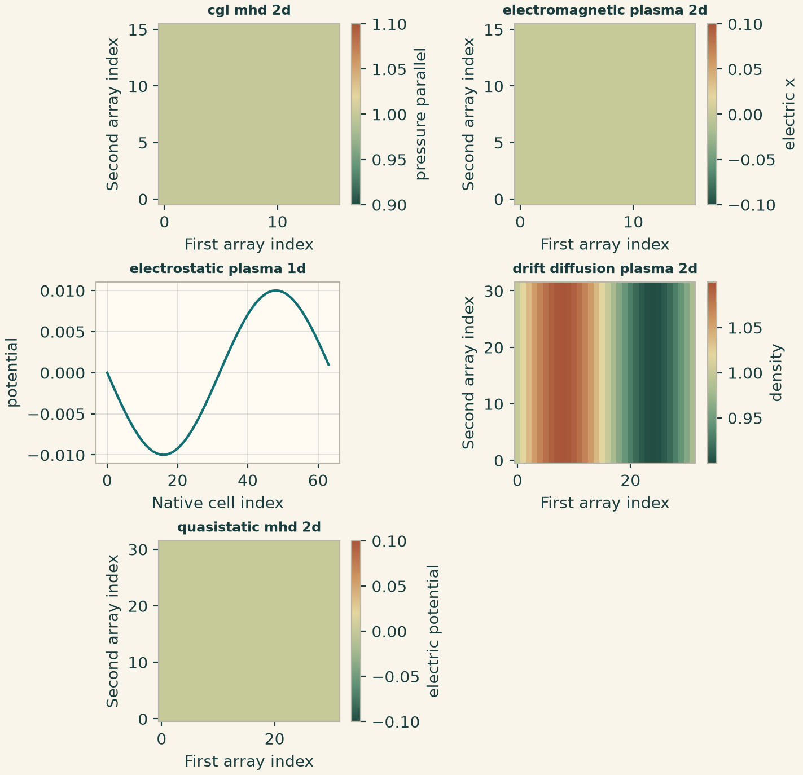
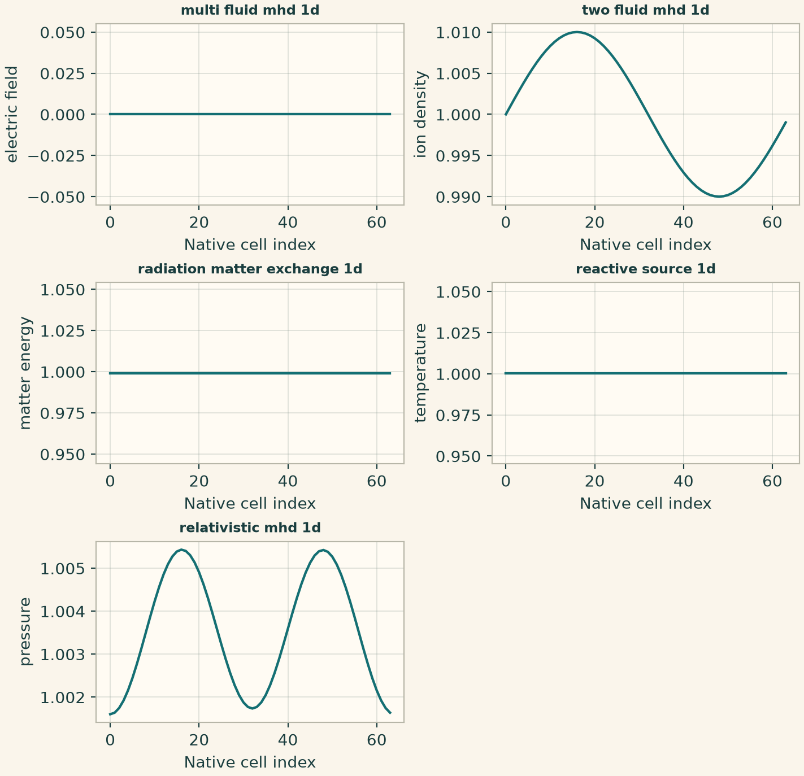

Docs › Worked physics and service recipes › Magnetohydrodynamics recipes
6.12 Magnetohydrodynamics recipes
This section includes the field-based declarations and the independently callable magnetohydrodynamics service configurations. The configuration keys in the service recipes belong to the indicated provider.
6.12.1 Drag-mediated two-fluid exchange
Two homogeneous components exchange momentum through drag. Without external forces the density-weighted velocity sum stays fixed.
from onesim.physics.magnetohydrodynamics import TwoFluidExchange
domain = LumpedDomain()
model = TwoFluidExchange(
domain=domain.system,
density_one=2,
density_two=3,
drag_coefficient=0.4,
)
t, data = history_case(
domain,
model,
dict(velocity_one=0.5, velocity_two=-0.2, energy_one=0.1, energy_two=0.1),
("velocity_one", "velocity_two", "energy_one"),
end=2,
dt=0.01,
)
np.testing.assert_allclose(
2 * data["velocity_one"] + 3 * data["velocity_two"], 0.4, atol=1e-10
)
fig = history_plot("Drag-mediated two-fluid exchange", model, t, data)
plt.show()

6.12.2 Homogeneous radiation and matter exchange
Initialize matter and radiation energies independently. Their sum remains constant in the isolated model and temperature follows the matter energy.
from onesim.physics.magnetohydrodynamics import RadiationMatterExchange
domain = LumpedDomain()
model = RadiationMatterExchange(
domain=domain.system,
heat_capacity=2,
absorption=0.3,
light_speed=4,
radiation_constant=0.1,
)
t, data = history_case(
domain,
model,
dict(matter_energy=2.0, radiation_energy=0.02),
("matter_energy", "radiation_energy", "temperature"),
end=2,
dt=0.01,
)
np.testing.assert_allclose(
data["matter_energy"] + data["radiation_energy"], 2.02, atol=1e-10
)
fig = history_plot("Homogeneous radiation and matter exchange", model, t, data)
plt.show()

6.12.3 Decay of velocity with Lorentz damping
The selected pressure gradient and applied electric field cancel the constant part of the force. A sinusoidal profile decays through viscosity and electromagnetic drag.
from onesim.physics.magnetohydrodynamics import (
InductionlessMomentum,
InductionlessNoSlipWall,
)
from onesim.numerics.fdm import PolynomialLaplacian
line = Line(start=(0, 0, 0), end=(1, 0, 0))
model = InductionlessMomentum(
domain=line.line,
density=2,
kinematic_viscosity=0.03,
conductivity=1.5,
magnetic_field=0.8,
electric_field=0.2,
pressure_gradient=0.24,
)
conditions = tuple(
InductionlessNoSlipWall(physics=model, boundary=getattr(line.boundaries, side))
for side in ("start", "end")
)
end = 0.12
result = line_experiment(
line,
model,
dict(velocity=lambda x: 0.1 * np.sin(np.pi * x)),
FiniteDifference(diffusion=PolynomialLaplacian()),
cells=36,
end=end,
dt=0.0005,
conditions=conditions,
)
u = result.field(model.velocity).values
np.testing.assert_allclose(
result.field(model.current_density).values, 1.5 * (0.2 + 0.8 * u)
)
exact = (
lambda x: 0.1
* np.sin(np.pi * x)
* np.exp(-(0.03 * np.pi**2 + 1.5 * 0.8**2 / 2) * end)
)
fig = profile_figure(
"Viscous and Lorentz damping",
result,
model,
("velocity", "current_density", "lorentz_force"),
reference={"velocity": exact},
)
plt.show()

6.12.4 Provider-selected radiation and matter exchange
Use the public provider ID to select a reduced MHD-family kernel. This example reads the provider's cell arrays and checks exchange conservation. Provider IDs advertised as pending describe extension slots.
from onesim.physics.magnetohydrodynamics import MagnetohydrodynamicPublicApi
api = MagnetohydrodynamicPublicApi()
key = "radiation_matter_exchange_1d"
assert key in api.provider_ids()
provider = api.create_provider(key)
result = provider.run(
matter_energy=1.0 + 0.1 * np.sin(np.linspace(0, 2 * np.pi, 64, endpoint=False)),
radiation_energy=np.full(64, 0.1),
)
np.testing.assert_allclose(result.total_energy_residual, 0, atol=1e-8)
fig = service_figure(
"MHD provider radiation exchange",
np.arange(64),
"Native cell index",
("Matter energy", result.matter_energy),
("Radiation energy", result.radiation_energy),
)
plt.show()

6.12.5 The provider catalogue and its execution status
The registry advertises 74 provider IDs. This checkout marks 27 implemented, 1 partial and 46 pending. The galleries below exercise the implemented entries and the executable reduced relativistic variant. Each panel plots a real result array with its own scale. The shared conservative seed is in the order density, two momenta, total energy and two magnetic components. It uses a ratio of specific heats of 1.4. The routes with their own default state use that state and expose the selected native diagnostic.
import numpy as np
import matplotlib.pyplot as plt
import onesimulation_plot_theme as theme
from onesim.physics.magnetohydrodynamics import MagnetohydrodynamicPublicApi
def conservative_mhd_seed(n):
x, y = np.meshgrid(
np.linspace(0, 1, n, endpoint=False),
np.linspace(0, 1, n, endpoint=False),
indexing="ij",
)
density = 1 + 0.05 * np.cos(2 * np.pi * x)
pressure = 1 + 0.04 * np.cos(2 * np.pi * y)
mx = density * 0.05 * np.sin(2 * np.pi * y)
my = density * 0.03 * np.cos(2 * np.pi * x)
bx = 0.2 + 0.03 * np.sin(2 * np.pi * y)
by = 0.1 + 0.03 * np.cos(2 * np.pi * x)
energy = (
pressure / 0.4 + (mx * mx + my * my) / (2 * density) + (bx * bx + by * by) / 2
)
return density, mx, my, energy, bx, by
def provider_gallery(quantities, *, seeded=False):
theme.use_theme()
rows = (len(quantities) + 1) // 2
fig, axes = plt.subplots(
rows, 2, squeeze=False, figsize=(7.3, 2.35 * rows), layout="constrained"
)
for ax, (key, quantity) in zip(axes.ravel(), quantities.items()):
if seeded:
p = MagnetohydrodynamicPublicApi.create_provider(
key, mesh_size=16, final_time=0.002, time_step=0.0002
)
result = p.run(initial_state=conservative_mhd_seed(16))
else:
p = MagnetohydrodynamicPublicApi.create_provider(key)
result = p.run()
values = np.asarray(getattr(result, quantity))
assert values.ndim in (1, 2, 3) and np.isfinite(values).all()
label = quantity.replace("_", " ")
if values.ndim == 3:
values = values[:, :, values.shape[2] // 2]
label += " (mid-plane)"
if values.ndim == 1:
ax.plot(np.arange(values.size), values)
ax.set(xlabel="Native cell index", ylabel=label)
ax.grid(alpha=0.25)
else:
image = ax.imshow(
values.T, origin="lower", cmap=theme.FIELD, interpolation="nearest"
)
ax.set(xlabel="First array index", ylabel="Second array index")
fig.colorbar(image, ax=ax, label=label)
ax.set_title(key.replace("_", " "), fontsize=9)
for ax in axes.ravel()[len(quantities) :]:
ax.set_visible(False)
return fig6.12.6 Ideal, resistive and viscous MHD variants
Use the same six-component periodic seed for the ideal and resistive routes, their plasma-fluid entry points, and viscous MHD. The initial total energy includes the kinetic and magnetic parts.
quantities = {
"ideal_mhd_2d": "density",
"ideal_plasma_fluid_2d": "pressure",
"resistive_mhd_2d": "magnetic_x",
"resistive_plasma_fluid_2d": "magnetic_y",
"viscous_mhd_2d": "momentum_x",
}
fig = provider_gallery(quantities, seeded=True)
plt.show()

6.12.7 Thermal, anisotropic, extended and Hall variants
The common seed contains transverse magnetic and momentum variation. The Hall provider exposes a separate magnetic result. Select the named quantity from each result rather than assuming identical layouts.
quantities = {
"thermal_mhd_2d": "pressure",
"braginskii_mhd_2d": "total_energy",
"extended_mhd_2d": "pressure",
"hall_mhd_2d": "magnetic_z",
}
fig = provider_gallery(quantities, seeded=True)
plt.show()

6.12.8 MHD with phases, porous drag, radiation and reactions
Each provider adds diagnostics owned by its closure. The short smoke cases share a fluid state and use the respective provider's defaults for its additional closure parameters.
quantities = {
"multiphase_mhd_2d": "phase_fraction",
"porous_mhd_2d": "drag_power",
"radiation_mhd_2d": "exchange_source",
"reactive_mhd_2d": "reaction_rate",
}
fig = provider_gallery(quantities, seeded=True)
plt.show()

6.12.9 Divergence cleaning and three-dimensional induction
These providers define their own default initial state. Inspect divergence and pressure on native slices, with independent color scales for distinct fields.
quantities = {
"glm_mhd_2d": "divergence",
"glm_mhd_3d": "divergence",
"hall_mhd_3d": "pressure",
"resistive_mhd_3d": "pressure",
"ambipolar_diffusion_2d": "diffusion_residual",
}
fig = provider_gallery(quantities, seeded=False)
plt.show()

6.12.10 Anisotropic pressure and electromagnetic plasma providers
The CGL, electrostatic, electromagnetic, drift-diffusion and quasistatic routes expose different diagnostic carriers. The example uses each route's built-in demonstration state.
quantities = {
"cgl_mhd_2d": "pressure_parallel",
"electromagnetic_plasma_2d": "electric_x",
"electrostatic_plasma_1d": "potential",
"drift_diffusion_plasma_2d": "density",
"quasistatic_mhd_2d": "electric_potential",
}
fig = provider_gallery(quantities, seeded=False)
plt.show()

6.12.11 One-dimensional multi-fluid, radiation and reactive kernels
Use the reduced one-dimensional variants for direct result inspection. The catalogue marks the relativistic route as partial. The plotted pressure is from that executable reduced case.
quantities = {
"multi_fluid_mhd_1d": "electric_field",
"two_fluid_mhd_1d": "ion_density",
"radiation_matter_exchange_1d": "matter_energy",
"reactive_source_1d": "temperature",
"relativistic_mhd_1d": "pressure",
}
fig = provider_gallery(quantities, seeded=False)
plt.show()

6.12.12 Pending provider identifiers
The following registry entries have pending status in the inspected checkout. The executable MHD galleries use the implemented or partial entries described above.
pending_ale, pending_bingham_fluid, pending_boussinesq, pending_brinkman_flow, pending_carreau_fluid, pending_combustion_flow, pending_compressible_navier_stokes, pending_cross_fluid, pending_cut_cell, pending_darcy_brinkman_flow, pending_darcy_flow, pending_dpd, pending_dual_permeability, pending_dual_porosity, pending_embedded_boundary, pending_euler_euler_multiphase, pending_euler_lagrange_multiphase, pending_forchheimer_flow, pending_green_naghdi, pending_herschel_bulkley_fluid, pending_hybrid_kinetic_fluid, pending_hydrodynamics_euler, pending_immersed_boundary, pending_incompressible_navier_stokes, pending_lbm, pending_level_set, pending_low_mach_reactive_flow, pending_lubrication_flow, pending_maxwell_fluid, pending_mixture_model, pending_multispecies_reactive_flow, pending_nonlinear_shallow_water, pending_nonpremixed_flame, pending_oldroyd_b_fluid, pending_phase_field, pending_potential_flow, pending_power_law_fluid, pending_premixed_flame, pending_richards_flow, pending_saint_venant, pending_shallow_water, pending_sph, pending_stokes_flow, pending_viscoelastic_fluid, pending_viscous_hydrodynamics, pending_vof.